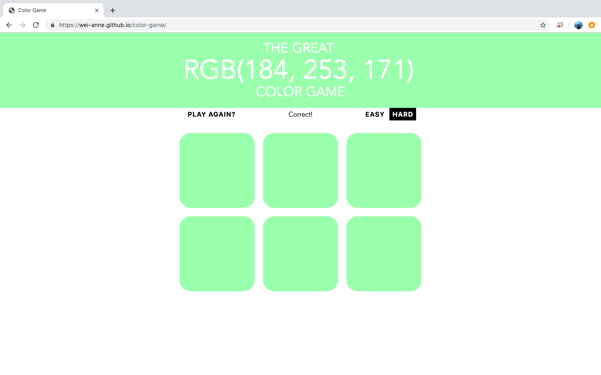
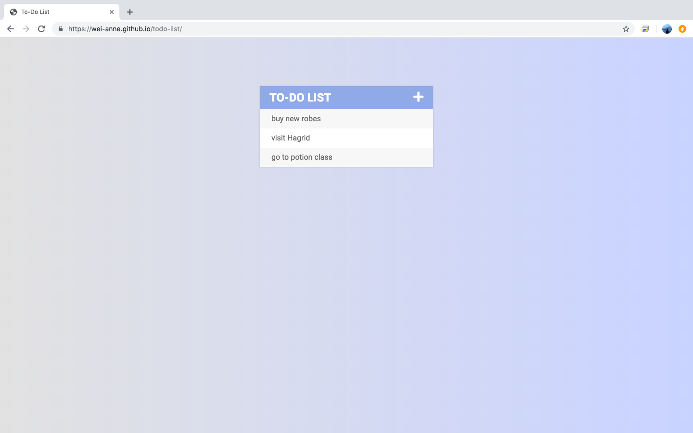
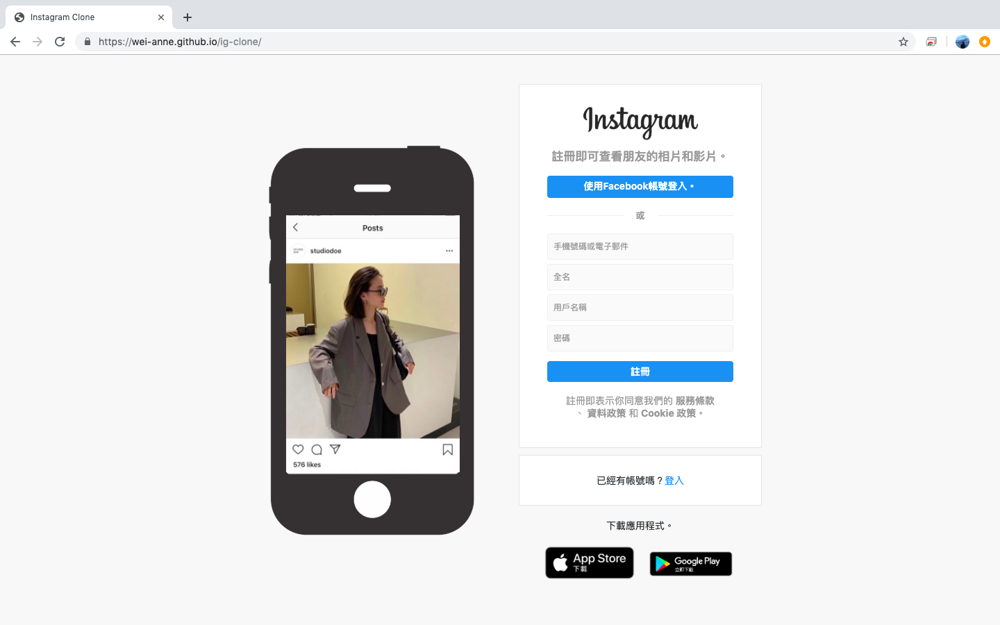
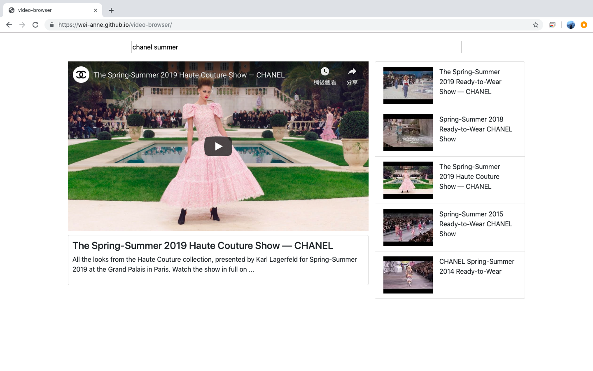
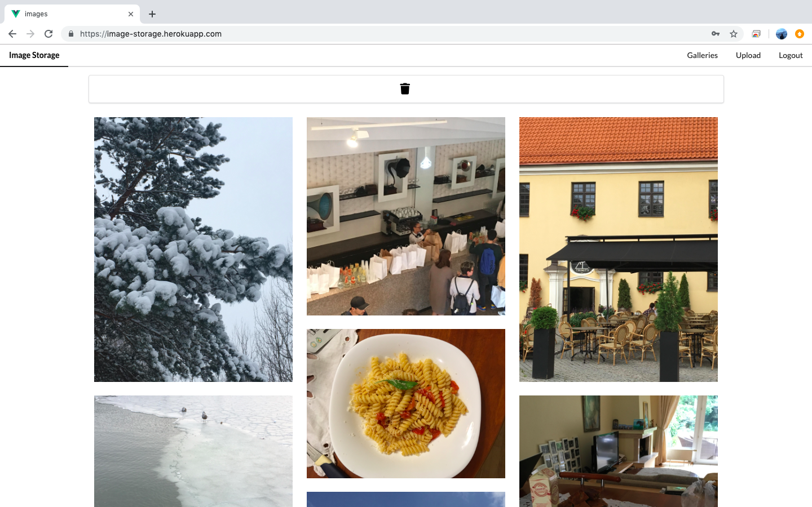

Color Game - JavaScript 進行 DOM 操作
௦ 瞭解變數在函數宣告過程中的作用域
௦ 提高程式碼的簡潔性與易讀性

Todo List - jQuery 進行 DOM 操作
௦ 監聽由使用者新增的待辦事項
௦ 處理事件觸發後向上傳導的現象

Instagram Clone - 製作 RWD 網頁
௦ Boostrap flex 排版
௦ CSS Media Queries 配合不同螢幕尺寸

Video Browser - Vue.js
௦ 串接 Youtube API
௦ 父子組件間雙向傳值

Image Storage - Vue.js + Vuex
௦ 串接 Imgur API
௦ 套用 Vuex 分割模塊，集中資料管理
௦ 透過 OAuth2 機制授權使用者登入
௦ Vue Router 管理網站路由